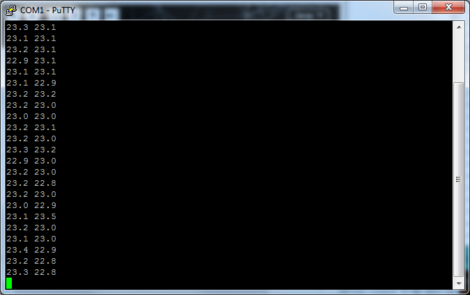

Putty
é uma aplicação Cliente, desenvolvida originalmente por Simon Tatham para a plataforma do windows. O putty é software de código aberto que está disponível como código fonte e é desenvolvido e suportado por um grupo de voluntários.
Descarga
link para os iniciados (directo)
o download do putty sobre a forma de pasta comprimida (.zip) com a generalidade das ferramentas pode ser realizado aqui
link para os utilizadores mais experientes, que sabem o que pretendem, sem demérito para os iniciados.
O download do Putty pode ser realizado aqui
Utilização
A utilização do putty à semelhança das aplicações de hyperterminal do windows é algo semelhante. Ferramenta poderosa nas capacidade que possui de base, que se extendem a comunicações cifradas entre servidores com o protocolo SSH.
Sessões de interface com Porta Série
Para abrir uma sessão com a porta série, apenas temos de abrir o ficheiro putty.exe que usualmente deve ser colocado em uma pasta de ferramentas nos seus documentos. (é apenas uma sugestão de organização)
assim que este está a correr apresenta a janela que o putty mostra na fotografia 1, aí deve escolher a opção Serial, e configurar o nome da porta onde se encontra o dispositivo que envia dados para o seu computador. A configuração padrão da porta série é usualmente 9600 Baud, conheçendo a velocidade a que está a trabalhar pode atingir velocidade de 1 000 000 Baud. com no caso do AltoEspectro.
tal como se apresenta na fotografia
Como abrir uma sessão na porta série de um dispositivo.
para iniciar a sessão basta apenas clicar em open e inicia-se a sessão com a porta série.
como guardar os dados recebidos da porta série.
Uma das funções interessantes do putty é dar a capacidade ao utilizador da mesma de, registar a sessão para posterior tratamento, como no caso do projecto altoEspectro onde será necessário verificar se os dados chegam, e nas condições esperadas. para o teste do envio da temperatura, será necessário configurar a porta série para 9600 Baud, para a porta onde se encontra o dispositivo e posteriormente escolher a opção que se vê na fotografia 1 de logging.
apresenta-se na fotografia 2 as opções que devem ser escolhidas por forma a conseguir-se guardar a sessão num ficheiro de texto.
Escolha as opções assinaladas de:
session logging, All session output, manter o nome do fiheiro como putty.log que será guardado na pasta onde guardou o putty.
ATENÇÂO: como irá escolher a opção always ask the user every time, convém que após um sessão mova o ficheiro que obteve para outra pasta onde irá tratar os dados, pois uma nova sessão irá pedir-lhe se pretende reescrever o ficheiro, perdendo os dados, ou então apensar os dados da nova sessão no ficheiro actual.
de seguida efectue open para iniciar a sessão, caso o putty lhe coloque a questão se pretende escrever por cima do ficheiro original, ou apensar os dados ao ficheiro existente faça a sua escolha, e verá aparecer uma janela com os seus dados a serem registados, tal como se apresenta na fotografia 3.
